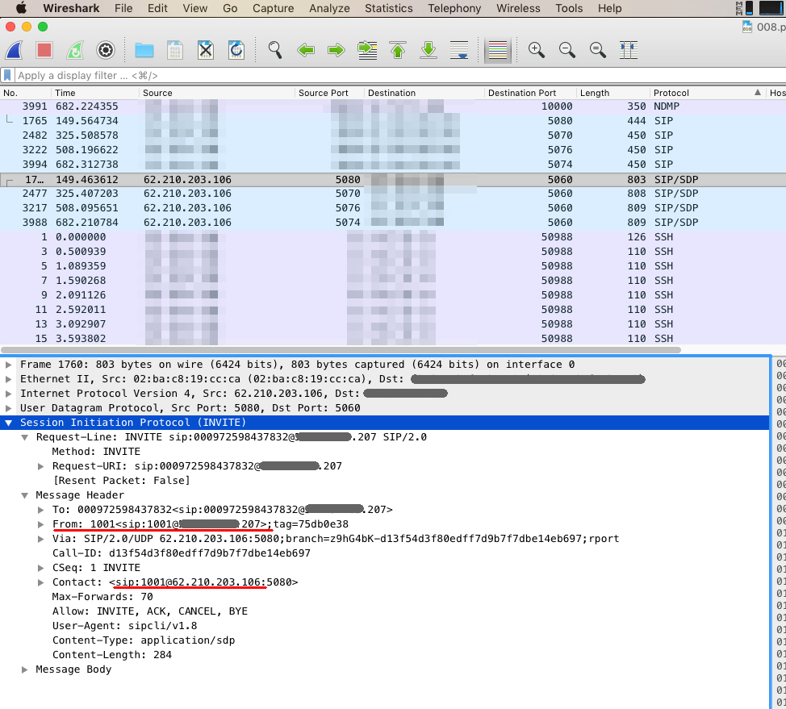

Introduction
Packet and protocol analysis are skills which fall squarely into the “use it or lose it” category, and can easily atrophy through lack of practice. As Stephen Northcutt – President of the SANS Technology Institute – says in the foreword to Brian Caswell, Jay Beale and Andrew Baker’s book Snort Intrusion Detection and Prevention Toolkit: “…understanding the network traffic entering, leaving and within your network…” is one of the “…basic skills a professional must have to avoid being impotent as a security practitioner“.
There are plenty of publicly available sources of sample packet captures on the internet, but personally I’d prefer to capture my own. Having detailed knowledge of (and control over) the environment in which the capture was generated not only allows for much more comprehensive analysis of the traffic itself to be performed, but also allows for inspection of the state of the local devices involved in the network conversations, which can give more insight into the outcome of the communcation events, and possibly the intentions of the actors responsible for initiating the exchange.
Modern Honey Network
Setting up a honeypot seemed to be a good way of going about attracting the attention of malicious actors and recording any interactions which take place, so I decided to pursue this as a coure of action. I’d recently read an article about Modern Honey Network and it sounded like this might be an ideal means of acheiving my objective. MHN is a framework for deploying and monitoring a network of distributed, low-interaction honeypots. It’s an open source project developed by the engineers responsible for the ThreatStream Threat Intelligence Platform. It supports the HPFeeds authenticated publish-subscribe protocol, to allow it to receive threat event data from deployed honeypots.
MHN supports a large number of honeypot implementations, including Dionaea which I decided to try out first as a means of testing the deployment process.
Note: The primary purpose of the framework described here is the collection of malware samples for analysis; I plan to document the results of experimenting with these capabilities in a later post.
Infrastructure
To avoid the security issues associated with hosting a honeypot on my own DMZ and exposing it to the outside world, I decided to make use of Amazon’s AWS EC2 free tier and set up separate t2 micro instances for MHN and the Dionaea honeypot sensor node:

MHN Instance
After setting up the MHN instance, I perfomed some rudimentary hardening – setting up an access control list within the AWS launch configuration to only permit traffic between my home machine and the MHN instance, and between the MHN instance and the honeypot instance, and also disabled all unneeded services. Note: AWS EC2 instances by default release their public IP addresses when stopped. It’s worth allocating an Elastic IP address to the instance, to avoid having to reconfigure MHN and the underlying Nginx web server every time the instance is restarted.
Installing MHN involves spinning up the relevant EC2 instance, SSH’ing in and running through the installation steps detailed on the MHN GitHub wiki page. After the installation completes, the supervisorctl service can be queried to determine the state of the child services:
{kind=link}
Opening a web browser at the IP address of the MHN instance should cause the MHN web server landing page to be displayed, confirming a successful installation.
Honeypot Instance
The access control list of the AWS launch configuration associated with the honeypot instance needs to be updated allow attackers to interact with the fake vulnerable services presented by Dionaea. The services and protocols we’re particularly intested in here are: FTP, SMB, MSSQL and SIP, but we also need to allow access via SSH so we can communicate directly with the host for management purposes.
The next step is to launch the honeypot AWS EC2 instance and SSH into it. The honeypot deployment script can be accessed via the “Deploy” tab on the MHN web interface:

The script can be copied to the terminal connected to the honeypot instance and executed, causing the installation process to begin. Once complete, the supervisorctl service can be queried to determine the state of the child services:
{kind=link}
A OS and version Nmap scan directed at the IP address of the honeypot confirms that the ports for services we’re exposing are open (note also those marked as ‘closed’ by nmap – these are ports open on the firewall but with no service behind them; this will be addressed at a later date when the relevant web, mail, directory and file services are enabled using installations of other honeypots on the same host).

With the honeypot up and running, it’s not long before attacks are being detected and communicated back the MHN management interface:


Packet Capture and Anlaysis
Since
Since my initial objective was to capture network traffic at the honeypot whist it was under attack, I installed TShark (the command line version of the protocol analyser Wireshark) and began capturing packets:
{kind=link}
After allowing TShark to run for about 15 minutes, I used SCP to copy the resultant pcap file back to my home machine for analysis in Wireshark. By comparing the threat event data presented on the MHN management interface with the traffic recorded within the pcap file, it was possible to identify what at first glance appear to be fairly typical attacks directed at specific services. For example, the screenshot below shows what appears to be a VoIP Caller ID spoof attack, where the “From” value embedded within the packet header has been falsified within a SIP protocol “INVITE” request:
Pcap file captured from honeypot analysed in Wireshark
{kind=link}
Conclusion
The Modern Honey Network project greatly simplifies the process of setting up and monitoring a network of low-interaction honeypots. This post described the outcome of my initial experiments using the platform as a means of capturing ‘real life’ packet data for analysis. The next steps will involve improving the configuration of the exposed fake services to present a more attractive target to attackers, in the hope that threat activity of a more advanced, persistent nature might be captured. I also plan to expand the network detailed in this post with additional honeypots, and to make use of the framework’s in-built facilties for capturing samples of malware for analysis.